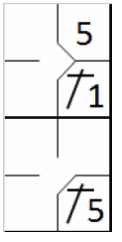
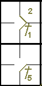
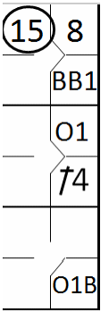

action { batter -> 1B1 }
/* The next batter hits a ball towards the third baseman, who chooses to relay the ball to the second baseman, but without success. */
action { batter -> FC54 , runner1 -> + }

FC” is also used in the first base square to indicate that the batter-runner’s advance to first was as a result of fielder’s choice. Unlike the occupied ball notation, however, which is always preceded by one or more fielding chances, “FC” is used when the alternative play, despite being correctly executed by the defense, does not result in a putout
Therefore, fielder’s choice shall not be considered as a fielding chance (defensive opportunity).
The notation to use is “FC” followed by two numbers, the first representing the fielder who initiated the play and the second identifying the base towards which he threw.
Example 71:
The infield ground ball is recovered by the third baseman who chooses to play for the forced runner, and fails
to make the putout.
This also indicates that when an infield ground ball is recovered by the second baseman, who chooses to play for
the forced runner and throws to the shortstop, but fails to make the putout, we score FC 44 for the batter (the first 4
is the fielder who initiated the play and the second 4 is the base towards he threw).
| WBSC | Translation in the scoring tool | Tool |
|---|---|---|
|
|
/* The first batter hits a single on the pitcher */ action { batter -> 1B1 } /* The next batter hits a ball towards the third baseman, who chooses to relay the ball to the second baseman, but without success. */ action { batter -> FC54 , runner1 -> + } |
|
The notation “FC” in the first base square indicates that a play for that base would have led to the batter-runner being put out, as demonstrated in the Example 72:
| WBSC | Translation in the scoring tool | Tool |
|---|---|---|

|
/* The first batter hits a single on the pitcher */ action { batter -> 1B1 } /* The next batter hits a ball toward the third baseman, who relays it to the first baseman to get the runner out */ action { batter -> 54 , runner1 -> + } |

|
Example 73: In the event that the scorer is not convinced that the batter would have been put out on first base, the result would be a safe hit.
| WBSC | Translation in the scoring tool | Tool |
|---|---|---|
|
 |
/* The first batter hits a single on the pitcher */ action { batter -> 1B1 } /* The next batter hits a ball towards the third baseman, who chooses to relay the ball to the second baseman, but without success. */ action { batter -> 1B5 , runner1 -> + } |
 |
Example 74: With first and second bases occupied, on a bunt by the ninth batter the pitcher tries unsuccessfully to put out the forced runner on third, thus giving the batter-runner the opportunity to reach first base.
| WBSC | Translation in the scoring tool | Tool |
|---|---|---|

|
/* The first batter wins first base on a 'base on ball' */ action { batter -> BB } /* The next batter hits a hit to second base, the runner advances to second base */ action { batter -> 1B4 , runner1 -> + } /* The batter hits a sacrifice bunt, but the fielder chooses to retire the runner on the second base without success.*/ action { batter -> SHFC15 , runner1 -> + , runner2 -> + } |
Example 75: If, in the action described above, the lead runner had been put out (or had reached base safely on an error by one of the two fielders who took part in the action), the batter-runner’s arrival on first base would have been recorded as an “occupied ball”.
| WBSC | Translation in the scoring tool | Tool |
|---|---|---|
|
 |
/* The first batter wins first base on a 'base on ball' */ action { batter -> BB } /* The next batter hits a hit to second base, the runner advances to second base */ action { batter -> 1B4 , runner1 -> + } /* The next batter hits a bunt at the pitcher, who recovers the ball and chooses to strike out the runner arriving at third base */ action { batter -> O1b , runner1 -> O1 , runner2 -> 15 } |

|
The Example 76: shows what happens when there is no opportunity to retire any of the runners.
| WBSC | Translation in the scoring tool | Tool |
|---|---|---|

|
/* The first batter wins first base on a 'base on ball' */ action { batter -> BB } /* The next batter hits a hit to second base, the runner advances to second base */ action { batter -> 1B4 , runner1 -> + } /*The next batter hits a bunt at the pitcher, who recovers the ball and throws it back to get the runner coming to third base, but without success */ action { batter -> 1B1b , runner1 -> + , runner2 -> + } |

|
ATTENTION: When, in such a play, the scorer judges that the defense would not have been able to make any other putouts, including the batter-runner, the batter-runner must be credited with a safe hit.
Example 77:
The seventh batter swings at the third strike, which is missed by the catcher. Despite recovering the ball in time
to make the putout on first, the catcher tries to put out the runner who left his base on the passed ball. The runner
reaches base safely.
The advance to third occurs on a passed ball, while the batterrunner’s advance to first is recorded as “FC”, preceded
by the strike and the cumulative strikeout number, and followed by the number of the catcher who made the throw and the
number of the base to which the alternative play was made.
| WBSC | Translation in the scoring tool | Tool |
|---|---|---|

|
/* The first batter hits a double to center field */ action { batter -> 2B8 } /* Third strike released on a pass ball, the catcher chooses to put out the runner arriving at third base but is unsuccessful */ action { batter -> KSFC25 , runner2 -> PB } |

|
The advance to third occurs on a passed ball, while the batter-runner’s advance to first is recorded as “FC”, preceded by the strike and the cumulative strikeout number, and followed by the number of the catcher who made the throw and the number of the base to which the alternative play was made.
The Example 78: shows the effects of a successful play for first base. No passed ball is charged to the catcher, because of the out.
| WBSC | Translation in the scoring tool | Tool |
|---|---|---|

|
/* The first batter hits a double to center field */ action { batter -> 2B8 } /* Third strike released on a pass ball, the catcher puts out the batter-runner with a throw to first base */ action { batter -> KS23 , runner2 -> O/2 } |